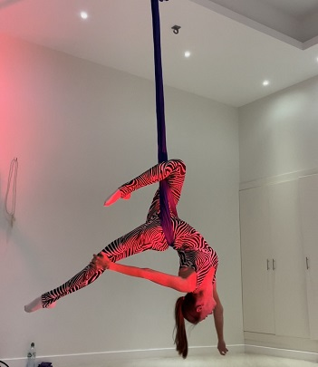

Home About Hammock  Aerial Hammock is aerial silks with a twist; meaning the aerial silks are strung from the ends of the fabric creating a hammock out of it's center. When the silks are hung in this manner, a whole new vocabulary of moves is created.